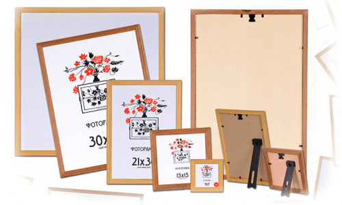

Фотопортрет покійного - зображення на віки.
Залишити у пам'яті, як виглядала близька померла людина допоможе фотопортрет покійного. В нашому похоронному
бюро “Ритуал” можна замовити чорно-білий та кольоровий фотопортрет. Для того, щоб ми могли зробити зображення,
потрібно надіслати або принести фотографію померлого з якої ви бажаєте зробити фотопортрет. Наші спеціалісти
врахують всі ваші бажання та зроблять якісне зображення по фото, яке не буде псуватися та втрачати свій вигляд
через вплив зовнішніх факторів.